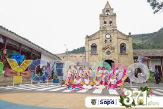
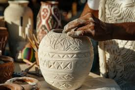
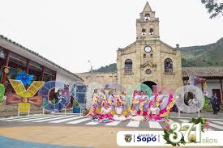
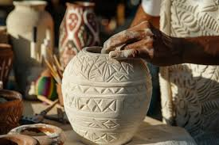
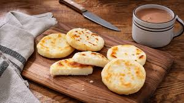
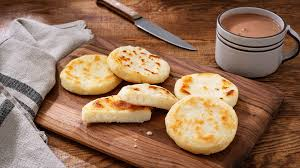

Sopó (Juan Albarracín)
Historia y Fundación
La historia de Sopó está intrínsecamente ligada a la cultura muisca, una de las civilizaciones más importantes de la región andina. Los muiscas, conocidos por su avanzada organización social y su destreza en la orfebrería, habitaron estas tierras mucho antes de la llegada de los conquistadores españoles. La fundación oficial de Sopó se remonta al 25 de mayo de 1653, cuando las autoridades coloniales establecieron formalmente el municipio bajo el nombre de “Nuestra Señora del Divino Salvador de Sopó”.
El municipio fue un centro religioso significativo, donde se rendía culto a Bochica, una deidad asociada con la creación y la agricultura. Con la llegada de los españoles en el siglo XVI, bajo la dirección de Gonzalo Jiménez de Quesada, se fundó oficialmente el municipio, lo que marcó el inicio de un nuevo capítulo en su historia. Durante la época colonial, Sopó fue un centro de comercio agrícola, aprovechando su fértil tierra y su ubicación estratégica. Las tradiciones indígenas se fusionaron con las costumbres españolas, dando lugar a una rica herencia cultural que perdura hasta hoy. La influencia de la arquitectura colonial se puede observar en muchas edificaciones del municipio.
Geografía
Sopó se encuentra en el altiplano cundiboyacense, a una altitud de aproximadamente 2,600 metros sobre el nivel del mar. Está rodeado por montañas y valles que forman parte de la cordillera de los Andes, lo que le otorga un paisaje montañoso y verde. Su clima es templado, con temperaturas que oscilan entre los 10°C y 18°C a lo largo del año.
La geografía es variada, con montañas, valles y ríos que crean un paisaje impresionante. El río Teusacá y sus afluentes son importantes para la agricultura local y ofrecen actividades recreativas como el senderismo y el avistamiento de aves. La región cuenta con una biodiversidad rica, con una variedad de flora y fauna que incluye especies nativas de la montaña.
Un Poco de Sopó
Sopó es un encantador municipio colombiano del departamento de Cundinamarca. Su proximidad a Bogotá lo convierte en un destino ideal para quienes buscan escapar del bullicio de la ciudad y disfrutar de un entorno natural y tranquilo. Conocido por sus paisajes pintorescos, su rica herencia cultural y su atmósfera acogedora, Sopó ofrece una mezcla perfecta de historia, naturaleza y tradiciones locales.
Actividades
- Ciclismo de montaña en rutas escénicas.
- Parapente para disfrutar de vistas aéreas de los Andes.
- Senderismo en el Parque Pionono.
- Participación en eventos culturales y festividades locales.
- Talleres de artesanía para aprender técnicas tradicionales.
 



Himno de Sopó
Autor: Raúl Rosero Polo
I Guarde Dios a esta tierra bendita,
como eterno remanso de paz.
Su adalid celestial centinela,
es el Señor de la Piedra de Sopó.
II Doce arcángeles cantan la gloria
que fundó Fray Francisco Chacón.
De tres pueblos que unieron su historia:
Meusa, Cueca en tu valle Sopó.
III Son tus hijos de raza valiente,
forjadores de prosperidad,
que han sembrado en tus verdes campiñas
la esperanza, la fe y la bondad.
IV Recostado en el cerro Pionono
te acaricia el gran Teusacá
y al mirar tu paisaje, Sopó,
yo me siento más cerca de Dios. (Bis).
Guarde Dios a esta tierra bendita,
como eterno remanso de paz.
Economía
Sopó posee una economía basada en su mayoría en el sector manufacturero, principalmente en la producción de derivados de productos lácteos. La fábrica de Alpina, una de las empresas más grandes del país, se encuentra en esta zona junto con otras empresas lecheras como Caprilac y Lácteos Sopó.
Estas empresas ayudan no solo a la creación de empleos, sino también a los ganaderos de la región con su producción de leche. Sin embargo, la economía es dependiente del sector agropecuario y se ve afectada cuando hay paros camioneros nacionales cerca de la capital colombiana.
Eventos Culturales
El viernes 27 de septiembre inician las festividades con el colorido desfile "El Llano se toma Sopó", una comparsa llena del folclore y energía de los llanos orientales. Además, se celebrará el XXIII Festival Nacional de Danzas, con grupos de Cundinamarca, Magdalena y Meta.
El domingo 29, Sopó se llenará de dulzura con el Festival del Postre, consolidando al municipio como el "municipio dulce" de la región. Habrá una clase magistral impartida por un chef invitado, compartiendo sus secretos para crear deliciosos postres.
La Semana Cultural de Sopó ofrece una mezcla de tradición y modernidad, con gastronomía, danza y música que hacen del evento una experiencia inolvidable.
Gastronomía
La gastronomía de Sopó, Cundinamarca, refleja las tradiciones culinarias de la región andina de Colombia, combinando ingredientes locales y recetas típicas de la Sabana de Bogotá. Algunos de los platos más representativos incluyen:
- Ajiaco: Una sopa espesa a base de tres tipos de papa, pollo desmenuzado, mazorca y guascas, servida con crema de leche, alcaparras y aguacate.
- Fritanga: Mezcla de carnes como chorizo, morcilla, longaniza, papas criollas y plátano frito, ideal para compartir.
- Arepas: Hechas de maíz, suelen servirse con queso fresco o acompañando carnes y sopas.
- Queso y productos lácteos: Destacan el queso campesino y el queso cuajada, disfrutados en preparaciones dulces o saladas.
- Postres típicos: Incluyen postres de guayaba, cuajada con melao y obleas con arequipe.
- Chicha: Bebida fermentada de maíz, parte importante de la cultura gastronómica.
 



Cosas Curiosas
Población
La población de Sopó es de 31,106 habitantes.
Símbolos
Escudo: Mediante acuerdo número 025 del 17 de noviembre de 1993 se adoptó como escudo de armas de Sopó un blasón de tipo francés cuartelado en cruz:
- En el primer cuartel, la imagen de mi padre Jesús de la piedra, aureolado de oro, sobre campo de sable, que representa la revelación milagrosa ocurrida en este terruño en 1753.
- En el segundo cuartel, tres bohíos indígenas terrazados, de oro en campo de azur, que representan los caseríos aborígenes de Cueca, Meusa y Sopó, que se fusionaron en uno y se reubicaron para formar el hoy pueblo de Sopó.
Bandera
La bandera de Sopó está formada por dos franjas:
- La primera de color azul, de 1.50 metros de largo por 60 centímetros de ancho, que simboliza el cielo que nos cubre y su riqueza hídrica.
- La segunda de color blanco, de 1.50 metros de largo por 60 centímetros de ancho, que representa la tranquilidad que se respira y la paz que se vive.
Unidas las dos, forman la bandera de 1.50 metros de largo por 1.20 metros de ancho que se iza en todos los actos públicos y días especiales del municipio.
Colegios en Sopó
- Colegio Integrado de Sopó: Una de las instituciones más grandes del municipio, que ofrece educación en todos los niveles, desde preescolar hasta media, con programas deportivos y artísticos.
- Colegio Espíritu Santo: Reconocido por su educación con un enfoque en valores cristianos y actividades extracurriculares.
- Gimnasio Campestre San Rafael: Colegio privado con enfoque campestre, que ofrece un ambiente educativo más cercano a la naturaleza.
- Colegio San José de Calasanz: Con una sólida trayectoria en la región, ofrece un enfoque académico orientado a valores y excelencia.
- Colegio San Francisco de Sales: Se caracteriza por su formación en valores y la calidad de su educación básica y media.
- Colegio Pedagógico Divino Niño: Destacado por sus buenos resultados académicos y su enfoque en la formación integral de los estudiantes.
Universidades cerca de Sopó
- Universidad de La Sabana (Chía): Ubicada en Chía, a unos 20 minutos de Sopó, es una de las universidades más prestigiosas de la región.
- Universidad de Cundinamarca (Sede Zipaquirá): Universidad pública con programas de pregrado y posgrado, a unos 30 minutos de Sopó.
- Universidad Militar Nueva Granada (Sede Cajicá): Ofrece varios programas de pregrado y posgrado, ubicada a menos de 30 minutos de Sopó.
- Politécnico Grancolombiano (Sede Chía): Ofrece carreras técnicas, tecnológicas y universitarias en Chía.
- Universidad Manuela Beltrán (Sede Cajicá): Ofrece programas en áreas como salud, ciencias sociales, ingeniería, y educación.
Fiestas
- Fiestas Patronales en Honor a la Virgen de Nuestra Señora del Rosario: Celebradas en octubre, incluyen misas, procesiones, eventos culturales y deportivos.
- Festival del Maíz: En julio, se realizan concursos de gastronomía y exposiciones culturales centradas en el maíz.
- Semana Santa: Celebraciones religiosas con procesiones y decoraciones de flores y aserrín.
- Festival de Música Sacra: Durante la Semana Santa, con coros y músicos de renombre.
- Festival del Fuego y la Cultura: En agosto, combina espectáculos de luces y actividades culturales.
- Ferias Agroindustriales y Artesanales: Generalmente en vacaciones, donde se promueven productos locales.
- Día del Campesino: En junio, se rinde homenaje al trabajo agrícola local.
- Celebración de San Isidro Labrador: En mayo, con una procesión que bendice las herramientas del campo.
- Navidad en Sopó: En diciembre, se celebran novenas, concursos y eventos familiares.